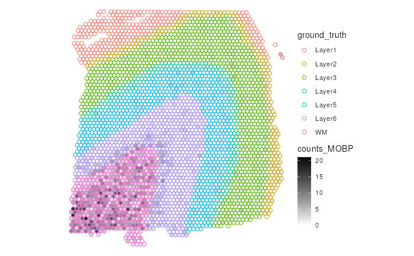
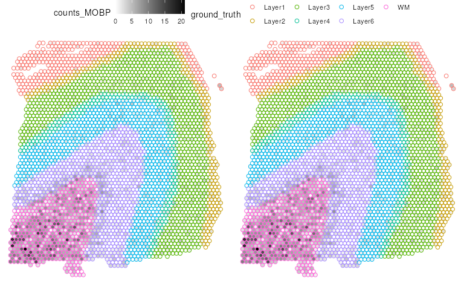

Getting Started with `escheR`
Boyi Guo
Johns Hopkins Bloomberg School of Public Health, Baltimore, MD, USAStephanie C. Hicks
Johns Hopkins Bloomberg School of Public Health, Baltimore, MD, USASource:
vignettes/SRT_eg.Rmd
SRT_eg.RmdIntroduction
The goal of escheR is to create an unified
multi-dimensional spatial visualizations for spatially-resolved
transcriptomics data following Gestalt principles.
Our preprint describing the innovative visualization is available via bioRxiv.
Installation
You can install the latest release version of escheR
from Bioconductor via the following code. Additional details are shown
on the Bioconductor
page.
if (!require("BiocManager", quietly = TRUE)) {
install.packages("BiocManager")
}
BiocManager::install("escheR")The latest development version can also be installed from the
devel version of Bioconductor or from GitHub following
if (!require("devtools")) install.packages("devtools")
devtools::install_github("boyiguo1/escheR")
# `devel` version from Bioconductor
BiocManager::install(version='devel')Input data format
Starting from Version 1.2.0, escheR package supports
three data structures, including SpatialExperiment,
SingleCellExperiment,
and data.frame from base R.
In the following example, we demonstrate the how to use
escheR with a SpatialExperiment
object. Please visit our other tutorials for [TODO: add items and
list].
Making escheR Plot
Load Packages
To run the demonstration, there are two necessary packages to load,
escheR and STexampleData. STexampleData
contains a pre-processed 10x Visium dataset.
To note, escheR will automatically load
ggplot2 package. Hence, explicitly loading
ggplot2 is not required.
Preparing example data
In this step, we will find one 10xVisium sample from STexampleData
package, indexed by brain number of “151673”. For more information,
please see the vignettes of STexampleData.
spe <- Visium_humanDLPFC()
# Subset in-tissue spots
spe <- spe[, spe$in_tissue == 1]
spe <- spe[, !is.na(spe$ground_truth)]Here is a summary of the SpatialExperiment object called
spe.
spe
#> class: SpatialExperiment
#> dim: 33538 3611
#> metadata(0):
#> assays(1): counts
#> rownames(33538): ENSG00000243485 ENSG00000237613 ... ENSG00000277475
#> ENSG00000268674
#> rowData names(3): gene_id gene_name feature_type
#> colnames(3611): AAACAAGTATCTCCCA-1 AAACAATCTACTAGCA-1 ...
#> TTGTTTGTATTACACG-1 TTGTTTGTGTAAATTC-1
#> colData names(7): barcode_id sample_id ... ground_truth cell_count
#> reducedDimNames(0):
#> mainExpName: NULL
#> altExpNames(0):
#> spatialCoords names(2) : pxl_col_in_fullres pxl_row_in_fullres
#> imgData names(4): sample_id image_id data scaleFactorSet up an escheR plot
Similar to ggplot2::ggplot(), we first use the function
make_escheR() to create an empty plot. The input of
make_escheR() is a SpatialExperiment
object. The output of the function is a ggplot object with
no layer in it.
p <- make_escheR(spe)Adding layers
Unlike ggplot2, we use piping |> instead
of + to apply layers the figure. Mainly, we have three
functions add_fill, add_ground,
add_symbol. The inputs of these add_*
functions include the plots created using make_scheR() and
the variable name for the layer. Currently, the variable name should be
in the the column data of the spe object,
i.e. colData(spe).
Here we first apply the add_fill to add the spots
color-coded by the total number of cells all
spots(sum_umi).
(p1 <- p |>
add_fill(var = "cell_count"))
It is okay to use any combination of the add_*
functions. For example, we want to show the spatial domains of the
samples as the ground of the figure and use symbols to denote if each
spot is within the outline of the tissue slice. In this example, all
plotted spots are in the outlines of the tissue slice and hence marked
with dots.
(p2 <- p |>
add_ground(var = "ground_truth")) # round layer
p2 |>
add_symbol(var = "ground_truth", size = 0.2) # Symbol layer
#> Warning: The shape palette can deal with a maximum of 6 discrete values because
#> more than 6 becomes difficult to discriminate; you have 7. Consider
#> specifying shapes manually if you must have them.
#> Warning: Removed 513 rows containing missing values (`geom_point()`).
It is okay to change the ordering of these add_*
functions. However, we advise to always have the add_fill
as the first step to achieve the best visual effect due to the laying
mechanism.
Customize escheR Plot
Choosing Color Palette for add_fill and
add_ground
To maximize the utility of the multi-dimensional plot by applying
both color-coded layers using add_fill() and
add_ground(), it is important to choose minimally
interfering color-palette for the fill and
ground to avoid visualization confusion. The following
demonstration provide some examples for simultaneously visualization of
two variables regardless of their types (continuous vs categorical, or
categorical vs categorical.)
Coninuous variable (gene expression) vs Categorical variable (Spatial Domains)
The following example visualizes the differential gene expression of
MOBP, a marker gene for white matter, across different spatial
domains. The default color palette, viridis, are not easily
visible with color-coded spatial domains as there are overlapping in the
color space, which could lead to possible confusion.
# Prep data
# Adding gene counts for MBP to the colData
spe$counts_MOBP <- counts(spe)[which(rowData(spe)$gene_name=="MOBP"),]
(p <- make_escheR(spe) |>
add_fill(var = "counts_MOBP") |>
add_ground(var = "ground_truth", stroke = 0.5))To improve the visualization, we choose to use a color that is not
included in the color palette for ground_truth, which is
the color black. Specifically, we use a color gradient from
white (no expression) to black (maximum of gene counts) to represent the
expression of MOBP in each spot. By using the white-black color gradient
for the gene expression, we minimize the overlapping of the choice of
color for spatial domains.
(p2 <- p +
scale_fill_gradient(low = "white", high = "black"))
After customizing the color palettes to be minimally overlapping, it
is easier to observe that MOBP has higher raw gene counts in
the white matter (WM) region than other regions.
Categorical variable Vs Categorical variable
In this example, we demonstrate how to optimize color palettes for
visualizing two categorical variables. We first create an arbitrary
5-level categorical variable called tmp_group, representing
different horizontal regions of the tissue section.
spe$tmp_group <- cut(
spe$array_row,
breaks = c(min(spe$array_row)-1 ,
fivenum(spe$array_row))
)
table(spe$tmp_group)
#>
#> (-1,0] (0,18] (18,36] (36,52] (52,73]
#> 40 864 933 893 881Following the principle to avoid overlapping of two color palettes,
we use gradients of blue for different levels of
tmp_group.
make_escheR(spe) |>
add_fill(var = "tmp_group") |>
add_ground(var = "ground_truth", stroke = 0.5) +
scale_fill_brewer() +
theme_void()Here is another example where we try another manually-curated
color-palette. We follow the same principle, minimize overlapping of two
color-palettes for ground (scale_color_manual) and fill
(scale_fill_brewer) respectively. Specifically, we use
gradients of blue to show tmp_group and other colors for
spatial domains ground_truth.
make_escheR(spe) |>
add_fill(var = "tmp_group") |>
add_ground(var = "ground_truth", stroke = 0.5) +
scale_fill_brewer() +
scale_color_manual(
name = "", # turn off legend name for ground_truth
values = c(
"Layer1" = "#F0027F",
"Layer2" = "transparent",
"Layer3" = "#4DAF4A",
"Layer4" = "#984EA3",
"Layer5" = "#FFD700",
"Layer6" = "#FF7F00",
"WM" = "#1A1A1A")
) NOTE: It would be intrinsically difficult to construct a clear, intuitive and precise visualization when the number of categories/levels is large.
Guidance in choosing bivariate color palette
In this vignettes, we don’t provide or recommend specific color
palettes, because the selection of color palettes is highly relevant to
the underlying message and heterogeneous across analysis and studies,
e.g. sequential palettes, qualitative palette, and divergent palette.
Instead, we direct interested user to explore the topic on bivariate
color palette. The blog post
by Jakub Nowosad and R package biscale
could be helpful to optimize your color palette for bivariate
visualization.
In addition, if color palette is extremely to curate, e.g. large
number of levels, it is possible to use symbols (add_symbol()) to annotate
specific levels to avoid clutter in the color space.
Adjusting aesthetics
Given that the escheR package is developed based on
ggplot2, aesthetics can be easily adjusted following the
ggplot2 syntax. For example, given a escheR
plot object, one can use + with theme_*,
scale_* functions.
For example, to change the aesthetics of each layer, one can simply
use the scale_* from ggplot2 to optimize the
final visual presentation. For example, to optimize
add_fill, one can use scale_fill_*; to
optimize add_ground, one can use
scale_color_*; to optimize add_sumbol, one use
scale_shape_*. Here, we demonstrate how to change the color
for the ground layer ( add_ground) using
scale_color_manual.
(p_final <- p2 +
scale_color_manual(
name = "", # No legend name
values = c(
"Layer1" = "#F0027F",
"Layer2" = "#377EB8",
"Layer3" = "#4DAF4A",
"Layer4" = "#984EA3",
"Layer5" = "#FFD700",
"Layer6" = "#FF7F00",
"WM" = "#1A1A1A")
) +
labs(title = "Example Title"))Show a subset of levels
The easiest way to show only a subset of levels of a categorical variable is to create a new variable where all the unwanted levels will be set to NA values. Please see the example below
table(spe$ground_truth, useNA = "ifany")
#>
#> Layer1 Layer2 Layer3 Layer4 Layer5 Layer6 WM
#> 273 253 989 218 673 692 513
spe$tmp_fac <- factor(spe$ground_truth,
levels = c("Layer1", "Layer2"))
table(spe$tmp_fac, useNA = "ifany")
#>
#> Layer1 Layer2 <NA>
#> 273 253 3085
make_escheR(spe) |>
add_ground(var = "ground_truth") |>
add_symbol(var = "tmp_fac", size = 0.4) +
scale_shape_manual(
values=c(3, 16), #> Set different symbols for the 2 levels
breaks = c("Layer1", "Layer2") #> Remove NA from legend
)
#> Warning: Removed 3085 rows containing missing values (`geom_point()`).Multi-sample Figure
By design, make_escheR operates on only one sample. In
order to create a figure compiling the spatial plots for multiple
samples, individual plots are required via a series of calls to
make_escheR, possibly via a for loop or an
iterator function (e.g. lapply).
# Create a list of `escheR` plots
plot_list <- unique(spe$sample_id) |> # Create a list of sample names
lapply(FUN = function(.sample_id){ # Iterate over all samples
spe_single <- spe[, spe$sample_id == .sample_id]
make_escheR(spe_single) |>
add_fill(var = "counts_MOBP") |>
add_ground(var = "ground_truth", stroke = 0.5))
# Customize theme
})Given all plots made for individual samples are stored in a preferred
data structure (e.g. a list), one can use many functions,
e.g. cowplot::plot_grid,
patchwork,
to compile and arrange individual plots to a paneled figure. The
following example uses ggpubr::ggarrange
to create a figure from a list of escheR plots.
library(ggpubr)
plot_list <- list(p2, p2)
ggarrange(
plotlist = plot_list,
ncol = 2, nrow = 1,
common.legend = TRUE)
Save escheR plot
The procedure to save escheR plots is exactly the same
as saving a ggplot object. In the example below, we use the
function ggplot2::ggsave() to save escheR
plots in the pdf format.
ggsave(
filename = "path/file_name.pdf",
plot = p_final
)Session information
utils::sessionInfo()
#> R version 4.3.2 (2023-10-31)
#> Platform: x86_64-pc-linux-gnu (64-bit)
#> Running under: Ubuntu 22.04.3 LTS
#>
#> Matrix products: default
#> BLAS: /usr/lib/x86_64-linux-gnu/openblas-pthread/libblas.so.3
#> LAPACK: /usr/lib/x86_64-linux-gnu/openblas-pthread/libopenblasp-r0.3.20.so; LAPACK version 3.10.0
#>
#> locale:
#> [1] LC_CTYPE=en_US.UTF-8 LC_NUMERIC=C
#> [3] LC_TIME=en_US.UTF-8 LC_COLLATE=en_US.UTF-8
#> [5] LC_MONETARY=en_US.UTF-8 LC_MESSAGES=en_US.UTF-8
#> [7] LC_PAPER=en_US.UTF-8 LC_NAME=C
#> [9] LC_ADDRESS=C LC_TELEPHONE=C
#> [11] LC_MEASUREMENT=en_US.UTF-8 LC_IDENTIFICATION=C
#>
#> time zone: UTC
#> tzcode source: system (glibc)
#>
#> attached base packages:
#> [1] stats4 stats graphics grDevices utils datasets methods
#> [8] base
#>
#> other attached packages:
#> [1] ggpubr_0.6.0 STexampleData_1.10.0
#> [3] SpatialExperiment_1.12.0 SingleCellExperiment_1.24.0
#> [5] SummarizedExperiment_1.32.0 Biobase_2.62.0
#> [7] GenomicRanges_1.54.1 GenomeInfoDb_1.38.0
#> [9] IRanges_2.36.0 S4Vectors_0.40.1
#> [11] MatrixGenerics_1.14.0 matrixStats_1.1.0
#> [13] ExperimentHub_2.10.0 AnnotationHub_3.10.0
#> [15] BiocFileCache_2.10.1 dbplyr_2.4.0
#> [17] BiocGenerics_0.48.1 escheR_1.3.1
#> [19] ggplot2_3.4.4 BiocStyle_2.30.0
#>
#> loaded via a namespace (and not attached):
#> [1] DBI_1.1.3 bitops_1.0-7
#> [3] gridExtra_2.3 rlang_1.1.2
#> [5] magrittr_2.0.3 compiler_4.3.2
#> [7] RSQLite_2.3.3 png_0.1-8
#> [9] systemfonts_1.0.5 vctrs_0.6.4
#> [11] stringr_1.5.0 pkgconfig_2.0.3
#> [13] crayon_1.5.2 fastmap_1.1.1
#> [15] backports_1.4.1 magick_2.8.1
#> [17] XVector_0.42.0 ellipsis_0.3.2
#> [19] labeling_0.4.3 utf8_1.2.4
#> [21] promises_1.2.1 rmarkdown_2.25
#> [23] ragg_1.2.6 purrr_1.0.2
#> [25] bit_4.0.5 xfun_0.41
#> [27] zlibbioc_1.48.0 cachem_1.0.8
#> [29] jsonlite_1.8.7 blob_1.2.4
#> [31] highr_0.10 later_1.3.1
#> [33] DelayedArray_0.28.0 interactiveDisplayBase_1.40.0
#> [35] broom_1.0.5 R6_2.5.1
#> [37] RColorBrewer_1.1-3 bslib_0.5.1
#> [39] stringi_1.7.12 car_3.1-2
#> [41] jquerylib_0.1.4 Rcpp_1.0.11
#> [43] bookdown_0.36 knitr_1.45
#> [45] httpuv_1.6.12 Matrix_1.6-2
#> [47] tidyselect_1.2.0 abind_1.4-5
#> [49] yaml_2.3.7 curl_5.1.0
#> [51] lattice_0.22-5 tibble_3.2.1
#> [53] shiny_1.7.5.1 withr_2.5.2
#> [55] KEGGREST_1.42.0 evaluate_0.23
#> [57] desc_1.4.2 Biostrings_2.70.1
#> [59] pillar_1.9.0 BiocManager_1.30.22
#> [61] filelock_1.0.2 carData_3.0-5
#> [63] generics_0.1.3 rprojroot_2.0.4
#> [65] RCurl_1.98-1.13 BiocVersion_3.18.0
#> [67] munsell_0.5.0 scales_1.2.1
#> [69] xtable_1.8-4 glue_1.6.2
#> [71] tools_4.3.2 ggsignif_0.6.4
#> [73] fs_1.6.3 cowplot_1.1.1
#> [75] grid_4.3.2 tidyr_1.3.0
#> [77] AnnotationDbi_1.64.1 colorspace_2.1-0
#> [79] GenomeInfoDbData_1.2.11 cli_3.6.1
#> [81] rappdirs_0.3.3 textshaping_0.3.7
#> [83] fansi_1.0.5 S4Arrays_1.2.0
#> [85] viridisLite_0.4.2 dplyr_1.1.3
#> [87] gtable_0.3.4 rstatix_0.7.2
#> [89] sass_0.4.7 digest_0.6.33
#> [91] SparseArray_1.2.2 farver_2.1.1
#> [93] rjson_0.2.21 memoise_2.0.1
#> [95] htmltools_0.5.7 pkgdown_2.0.7
#> [97] lifecycle_1.0.4 httr_1.4.7
#> [99] mime_0.12 bit64_4.0.5